Software Engineering
SCC. 160: Fundamentals of Communication Systems
FUN: Communications Introduction
Communications
- Transmission of information between two distant points.
- Commonly referred to as ‘telecommunications’, the word ‘tele’ implies ‘at a distance’. Two examples of how it is used in the industry.
- Smart motorways - use sensors to reduce congestion, provide safe passage
- House care - using sensors to detect low blood pressure, heart rate, falling. Minimises use of resources in the society.
Types of information |
Text | Audio / Sound | Image / Video |
- Email
- Tele-messages
- Twitter & Blogs
| | - Still images
- Movies
- Youtube & Instagram
|
History of Communications |
Non Electrical | - Sending signal via drums was used to signal neighboring tribes and groups. Sound of drumming patterns would contain information that was past on to react accordingly.
- Smoke signals could also be used to send messages to those far away. Limited as you can send little information, usually simple messages like ‘danger ahead’
|
Modern | - 1837, (Telegraph invented) Morse had an idea to string a wire between two points, miles apart and read the signals. Strung 1,700 feet of wire around his room in NYU.
- 1850, overland telegraph lines spanned Europe, North America and Middle East.
- 1851, England connected by cable to Europe via Dover and Calais.
- 1870s, telephone developed (wired) expensive & problematic.
- 1901, Marconi built wireless station at Cornwall (UK), in prep for transatlantic test. 12 Dec, Signal Hill in St John’s (Canada) received first radio signal from Cornwall (2,000 miles).
|
FUN: Signalling
Overview
- Data travels from source to destination in an ICT environment.
- Both analogue and digital signals are modulated, even binary cannot be sent as it has to be converted to a form where transmission medium can accept.
- Transmission of media can be either wire, cable or wireless. It functions by conducting energy along a physical path (data stream of binary must be converted into energy (analogue) in form of electromagnetic signals. Examples of day to day signals include: mouse, TV remote, doorbell.
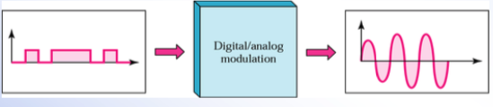
Modulation
- Process of transforming signal’s characteristic, how have they changed.
- Cannot send physical photograph via a wire, but you can convert photograph into signals and transmit these signals by encoding and modulating them.
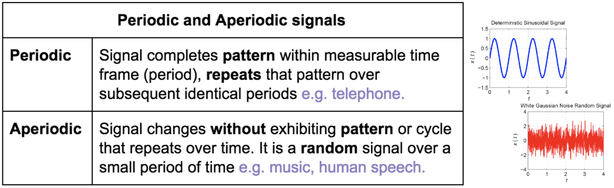
Analogue
- Physical time varying quantity usually smooth and continuous in time and amplitude e.g. acoustic pressure variation when speaking.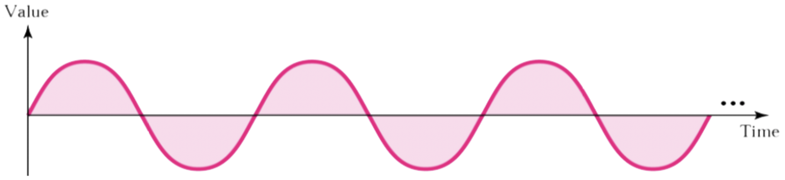
- Classified as simple (phone tone, engine sine) or composite (speech, music, digital).
- Visualised as simple oscillating curve (swing back and forth in regular rhythm), change over course of cycle is smooth and consistent with continuous flow.
Square waves
- Sine waves are important as they can form a perfect square wave form (analogue).
- Square waves have sudden change in value (jumps from one level to another).
- Can be further described using terms: peak amplitude (max distance from equilibrium) frequency (number of waves/periods per second, Hz, ) and phase (fraction of wave cycle elapsed relative to the origin).
- The peak amplitude represents the absolute value of its highest intensity (volume). For electric signals, peak normally measured in Volts.
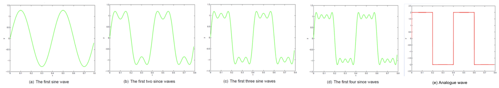

Period
- Amount of time signal needs to complete one cycle after which signal repeats itself, Seconds,
- A special case where frequency does not change at all (constant amplitude), the frequency is 0. Referred to as a DC signal, which is usually used in chargers. 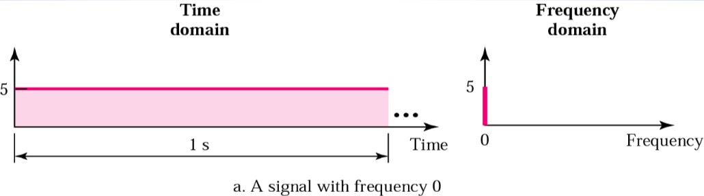
- If signal changes instantaneously, its frequency must be infinite, in practice this would not happen and thus infinity is never reached. 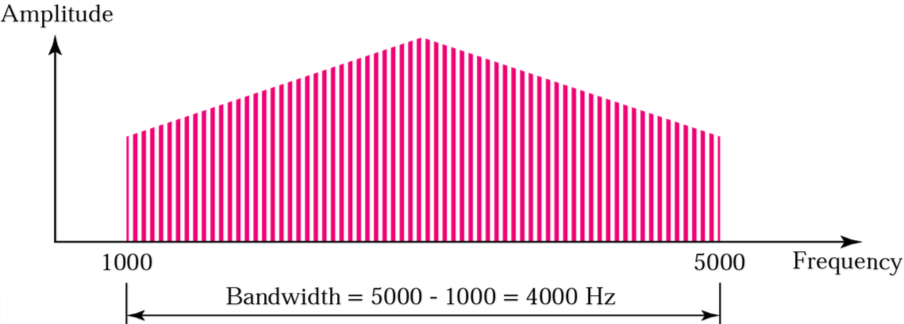
Bit rate vs Bit interval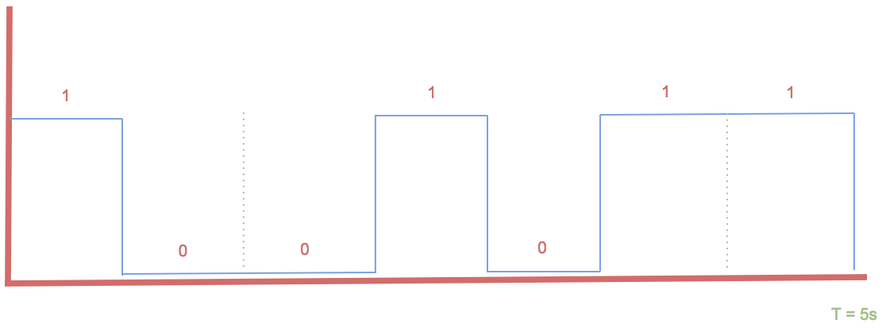
- Bit rate refers to number of bits transmitted per second .˙.
- Bit interval refers to time required to send one bit .˙.
FUN: Transmission Medium
Overview
- Analogue: Range of frequencies that medium can pass in Hertz.
- Digital: Maximum bit rate that medium can pass in bits per second.
- Any transmitted signal must pass through a transmission medium and each medium has unique characteristics, e.g. cable, air.
- May allow some frequencies, but block/weaken others - means when sending composite signal containing many frequencies, we may not receive same signal.
- Fibre cable has bigger bandwidth, thus allowing more frequencies through, resulting in more data throughput.
Transmission Impairment |
Attenuation | Loss of energy due to overcoming resistance of the medium e.g. wires carrying electrical signals get hot as energy is converted to heat. Overcome by using amplifiers to boost signal level to original. |
Distortion | Signal changes original form or shape - typically affects complex or composite signals. Takes place when composite signal carrying different frequencies suffers from delay of some of these frequencies e.g. amplitude distortion happens if all parts of signal is not equally amplified.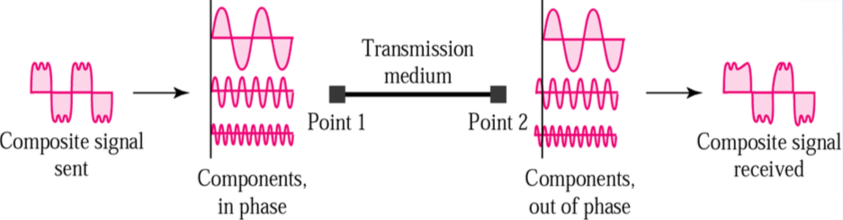 |
Noise | Additional external and unwanted information that interferes with transmission signal. Main source of signal corruption, types include: - Thermal - random motion of electrons in wire.
- Induced - created by sources such as motors and appliances.
- Crosstalk - effect of a signal affecting another wire.
- Impulse - signal spike, comes from power lines, lightning, engines.
|
Throughput
- How fast we can send data through network, always less than bandwidth.
- E.g. may have bandwidth of 1 Mbps, but device can only handle 200 kbps.
- E.g. motorway designed to transmit 1,000 cars per minute, if congestion, then reduced to 100 cars per minute.
If bandwidth passing average of 12,000 frames (10,000 bits each) per minute .˙.
Latency
- Delay, how long it takes for entire message to completely arrive at destination from time of the first bit sent.

- Propagation time measures time required for electrical signal travel from source to destination
( ) e.g. .˙.
) e.g. .˙. 
- Transmision time is time for transmitter to emit single frame, depending on size of message and bandwidth of channel at transmitter
( ) e.g. message size is 2.5 kbyte, and bandwidth of TX network is 1 Gbps .˙.
) e.g. message size is 2.5 kbyte, and bandwidth of TX network is 1 Gbps .˙.
Radio waves | Omni-directional (one-way), waves propagated in all directions, thus waves can be received by any receiving antenna. |
Microwaves | Unidirectional (narrowly focused), useful for one-to-one communication e.g. cellular phones, satellite networks, wireless LANs. Curvature of Earth does not allow two short towers to communicate, use drums to connect remotely, signal cannot go through walls. |
Infrared | Short-range communications, cannot penetrate walls (preventing interference), the sun may interfere with the signal as it also has infrared e.g. remote.
|
FUN: Modems
Modem
- Used mainly for long distances e.g. radio, TV, telephone, remotes.
- Traditional modems transmitted data at low rate (9.6kbps, 14.4 kbps, 33.6kbps) - limited due to theory of data rate limitations (Shannon 1948)
- Later modems achieved 56kbps using compression.
- To reduce interference and errors, telephones lines reduced from 3kHz to 2.4kHz.
- Modulator
- Translates information from source to transmitting method (wire, air).
- Information is in different forms, represented by analogue or digital words at source.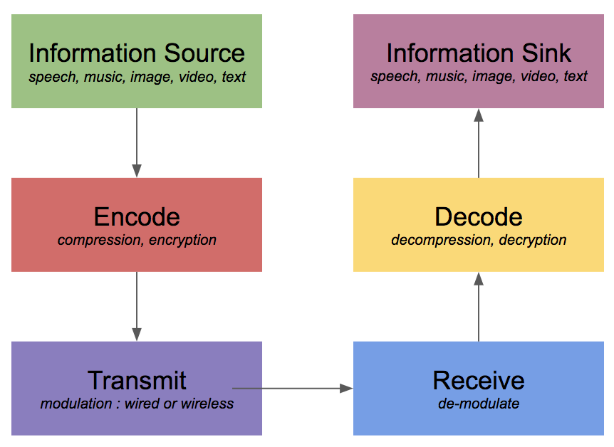
- Digital words translated into format that can be transmitted.
- Demodulator
- Reverses process reconstructing original message sent by converting modulated signal to original data.
Digital subscriber line (DSL) technology
- Set of technologies each working at different data transfer rates.
- Supports high speed over existing telephone network.
- Asymmetric communication (ADSL) technology
- System uses data rate based on condition of the local loop line.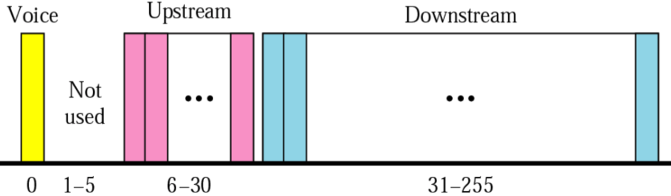
- By having an asymmetric system we enable users to have a higher download rate, this is more suitable as residential users don’t need as much upload.
- Symmetric communication (SDSL) technology
- More appropriate for businesses sending and receiving data in large volumes, given that the upload and download rate is equal.
Cable modems
- Broadcast video signal to locations with poor or no reception.
- Referred to as ‘Community Antenna’ in US as antenna is high up and distributes signals via coaxial cables. Thus allowing to have a bigger bandwidth.
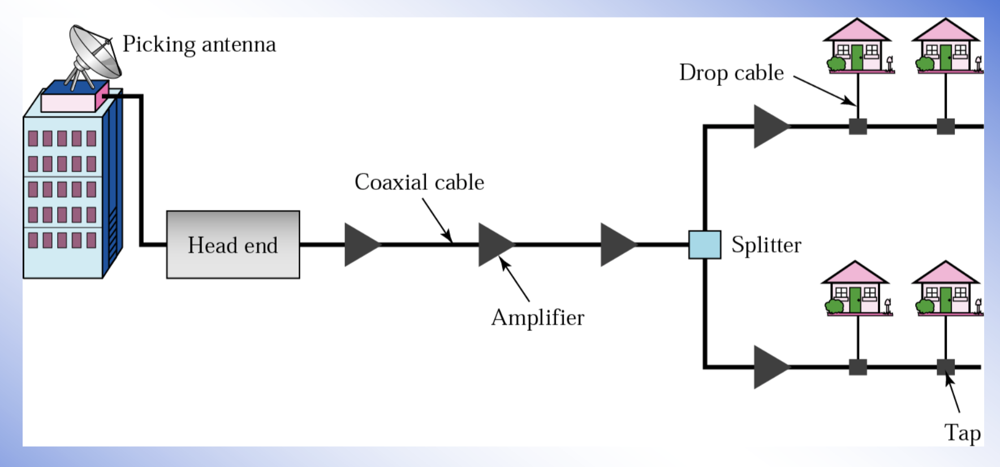
FUN: Modulation
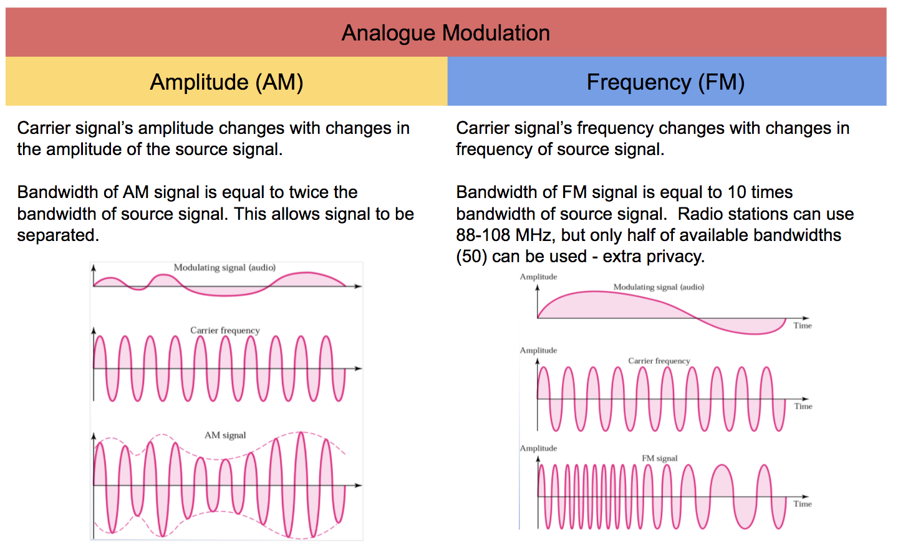
How is digital modulation achieved
- PAM: Pulses sent with equal width at regular intervals, but height of pulse varied in proportion to sample value. Marks a wave using bar chart type things

- You can quantify PAM through use of Sign & Magnitude.
- Quantisation: Taking samples of wave at different levels, forming a bit representation of the wave.
- Mapping smooth signal (continuous in value) to discrete in value signal (predefined levels) → no. defined by no. of bits.
- Leads to a quantisation error as the point is rounded to the nearest level. This data can never be restored. We can minimise it by adding more layers.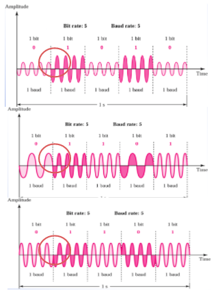
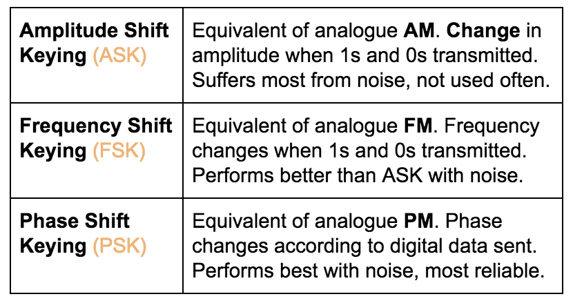
FUN: Multi-level Digital Modulation
Constellation Diagram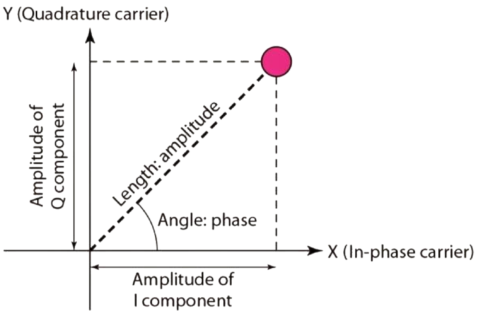
- Define amplitude and phase of a signal element.
- X axis → in-phase carrier
- Y axis → quadrature carrier
- Length → amplitude
- Angle → phase
Bits and Symbol rates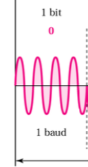
- Digital data specified by bit rate - when data bata bits translated to analogue (sine), they become symbols (bauds).
- Max symbol rate is
- Nyquist shows number of signal levels needed →
Multi-level modulation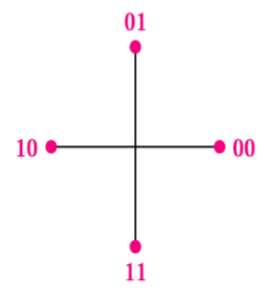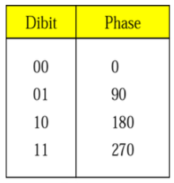
- More than two levels used i.e. higher than 2PSK.
- 2PSK only 2 points mapped on diagram.
- 4PSK phase shift differs by 90
 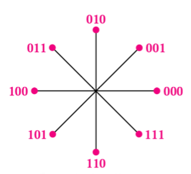
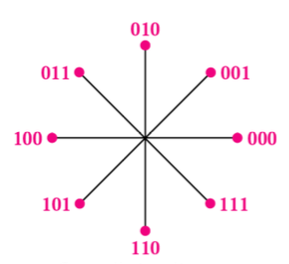
- More bits transmitted, but symbols are closer to each other thus harder to distinguish in noisy conditions.
- Becomes very hard after 3 bits due to small angles, we can use QAM instead.
QAM
- Combines ASK and PSK to achieve max contrast between symbols.
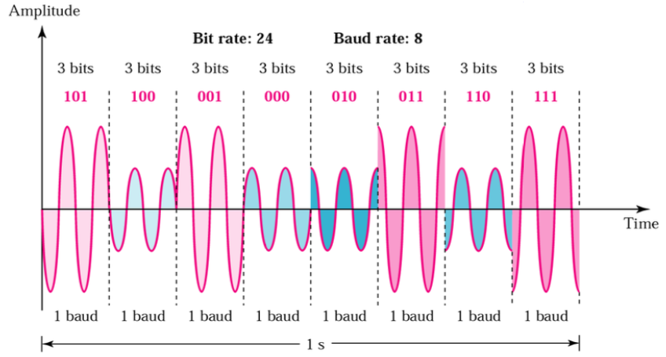
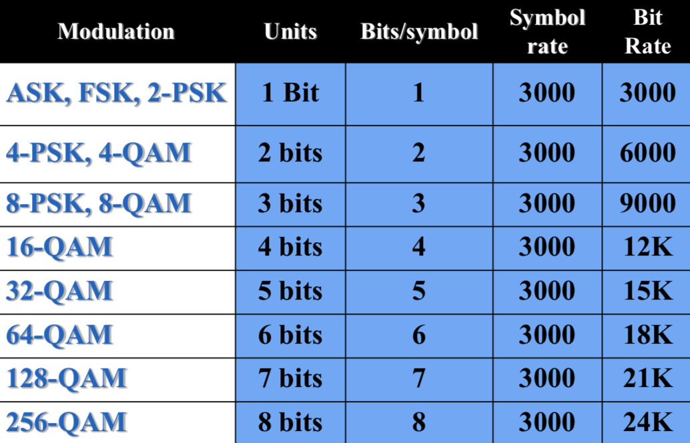
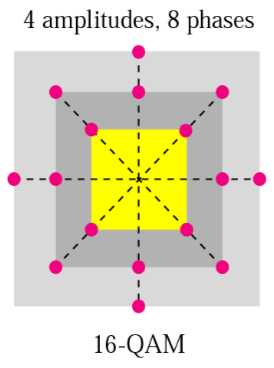
FUN: Broadcasting technologies
Audio recording
- 1877, Thomas Edison developed ‘tinfoil phonograph’, this was first device to record and playback sound → cylindrical drum wrapped in tinfoil and mounted on threaded axle, horn served as microphone and speaker.
- 1900s, Reginald Fessenden invented the vacuum tube amplifier with the ability to transmit signals such as songs.
AM broadcasting
- Process of mixing audio modulating signal with the radio frequency carrier.
- AM is being performed through ‘modulator’ stage, here 2 signals enter block:
- High Frequency is created by the HF oscillator and amplified by HF amplifier to required signal level.
- Low Frequency signals (the message) coming from microphone is amplified by the LF amplifier.
- Output of modulator is the modulated AM signal, output is then amplified by power amplifier and then transmitted via the emission antenna.
- Resulting frequency consists of 3 main components:
- Carrier
- Upper sideband (Carrier Frequency + Audio Modulating Frequency)
- Lower sideband (Carrier Frequency - Audio Modulating Frequency)
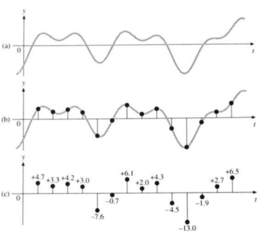
Waveform coding techniques
- Conversion of analogue waveform into a discrete-valued, discrete-time format achieved by:
- Sampling: Regular snapshots of waveform observed. Must make sure to have enough sample points, otherwise some information can be lost when reconstructed.
- PCM Quantisation: Range of amplitudes of analogue waveform divided into 2n levels, where each level assigned unique n-bit codeword. If all levels are equal amplitude then Linear PCM, otherwise Non-linear PCM (logarithmic spacing). Increase number of bits to increase number of levels and thus quality.
Quantisation noise
- Difference between true analogue value of sample and its quantised representation.
- Noise can be minimised by using many levels, however, this increases bit rate as more bits are needed to transmit.
- Non-linear quantisation achieves less noise for a given bit rate than linear quantisation.
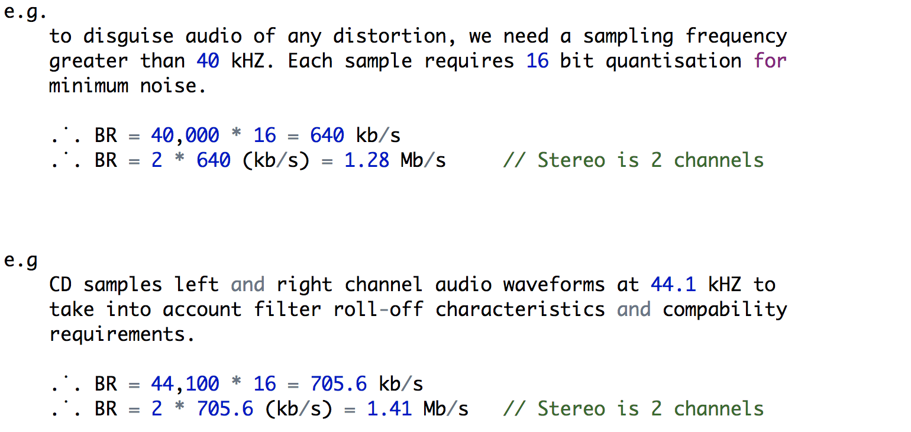
FUN: Sound and Hearing Spectrum
Approximate values |
180 Hz - 12,000 Hz | Frequency range of female voice. |
95 Hz - 9,200 Hz | Frequency range of male voice. |
50 Hz or 20,000 Hz | Sensitivity of human ear reduced below 50 Hz or above 20,000 Hz. |
Logarithmic scales
- Measured in decibels (sound) dB.
- Non linear scale, as human ear does not perceive sound in a linear way
e.g. 2 * sound energy is not 2 * loudness to a human.
e.g. //Log10(1000) is equal to 3.
Equal loudness principle
- Ear is more sensitive to certain frequencies. This means that sounds that are equally loud, may not be perceived as equally loud if their frequency is different.
Digital Audio Broadcasting (DAB)
- Offers CD-quality sound, additional radio and data services, plus ease of tuning and interference-free reception for the listener with potential of producing revenue creating services.
Multiplexing
- Data for individual services must be combined into single data stream ready for transmission.
- Reverse operation occurs at other end (de-multiplexing).
- TDMA: Time division multiple access.
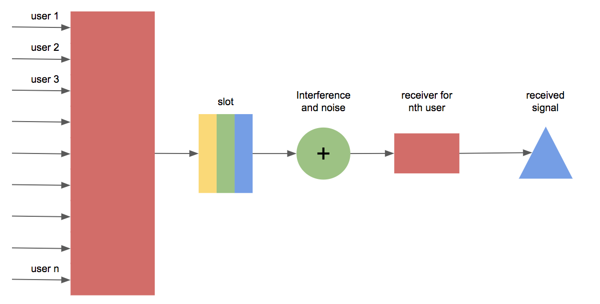
- CDMA: Code division multiple access, each user has own spreading code (key), several users share the same frequency band.
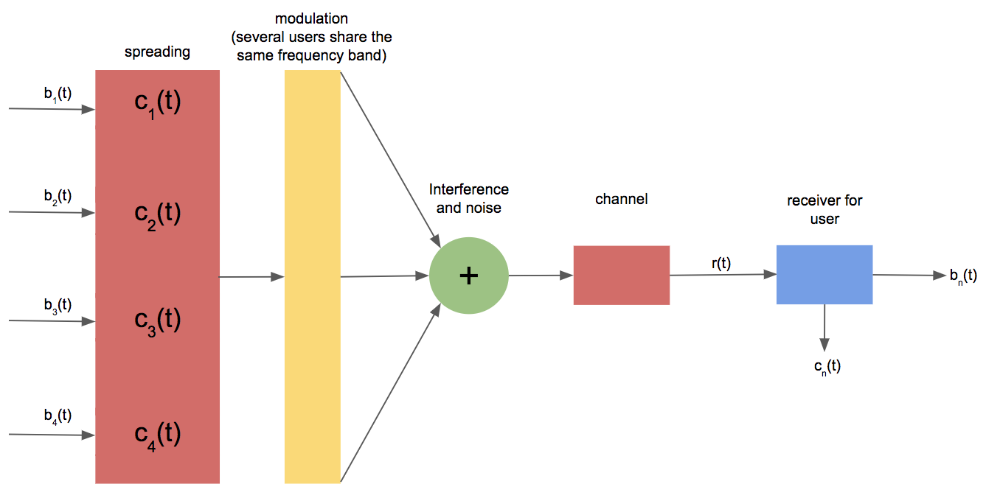
- FDMA: Frequency division multiple access.
FUN: Mobile Communication System
Mobile station (MS)
- Device such as a handset, consists of:
- Terminal Equipment (TE): Device that hosts applications and allows user interaction.
- Mobile Terminal (MT): Connects device to the network.
The Cell Concept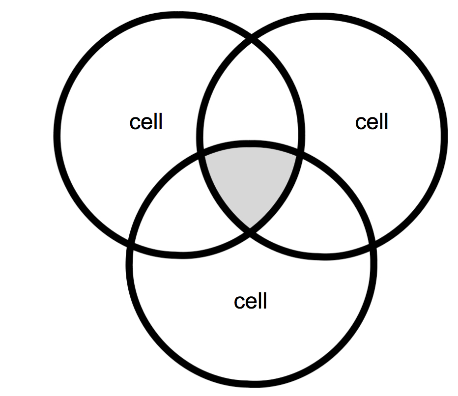
- Cell: Area of radio coverage from one base station antenna.
- Each cell given unique number called Cell Global Identity (CGI).
- One cell can send signal in all directions so sometimes there are multiple sectors around the antenna.
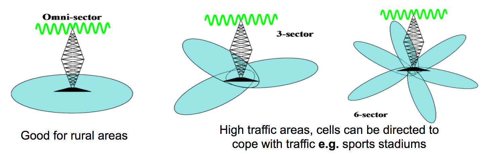
Uplink and Downlink
- Must be separated for one user, methods to do so include:
- Time division duplex (TDD): Bluetooth
- Frequency division duplex (FDD): FDD-WCDMA
Mobile phone history |
1G e.g. AMPS | - Appeared in 70s in the US and 80s in Europe.
- Analogue systems not suitable for compression and coding (less reliable and flexible).
- Components are big and expensive, so mobiles often resembled bricks.
|
2G e.g. GSM | - Supports voicemail, call waiting, SMS and roaming.
- Later upgraded to 2.5G, included fast internet.
- Device listened and sampled speakers voice and sent it to other device to reconstruct the signal.
|
3G e.g. CDMA 2000 | - Introduced in 2005, enabled multimedia communication, fast internet access, and entered the smartphone era.
- Higher bit rates and higher quality of service.
|
4G e.g. LTE | - Long term evolution (LTE) promises transfer rates up to 100Mbs. Based on 3G technology.
- High network throughput with low latency and operating costs.
- Faster data download and upload with improved response rate for apps and end-user experience.
|
FUN: Digital TV and Video broadcast
Digital Video Broadcasting (DVB)
- Differential quadrature phase shift keying (DQPSK): Satellite (DVB-S)
- Equivalent to 4PSK, has 4 states, 00, 01, 10, 11 (QPSK).
- Phase transitions used to signal pairs of bits of the serial data stream.
- Reference signal not required, recovery made by determining changes between adjacent symbols.
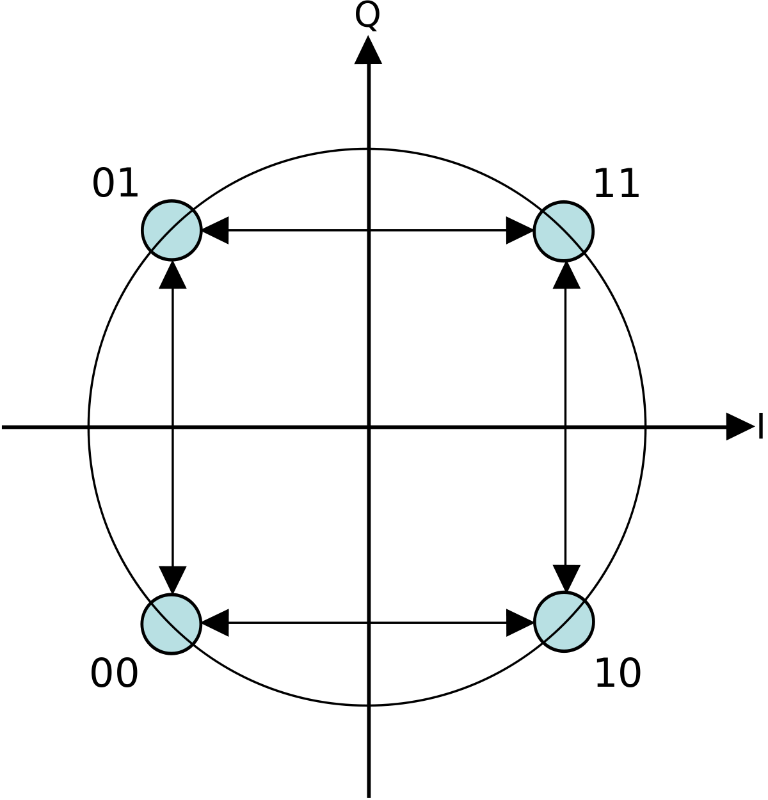
- Quadrature amplitude modulation (QAM): Cable (DVB-C)
- Combination of PSK and ASK, used constellations to transmit and recover signals.
- Orthogonal frequency division multiplexing (OFDM): Terrestrial (DVB-T)
- Serial-to-parallel converts high bit-rate stream into large number of low bit-rate parallel streams.
- Each low bit-rate stream modulates different carrier (PSK/QAM).
- In DVB-T, number of carriers always 2048 or 8192.
- Carries harmonically related with common and precisely accurate calculated frequency to ensure orthogonality.
- Combined with error connection, out of 2048 or 8192, only 1705 or 6817 are used for information, the rest are guard intervals or are used for syncing.
Components of digital TV
- Audio and Video: MPEG standard → MPEG-1 for CD quality, MPEG-2/3 for DVD quality and MPEG-4 for Blu-ray (HD).
- Service Data: Extra information e.g. tele-text and network specific information such as electronic programme guide, this data would not be encoded as it’s not required.
JPEG and MPEG encoding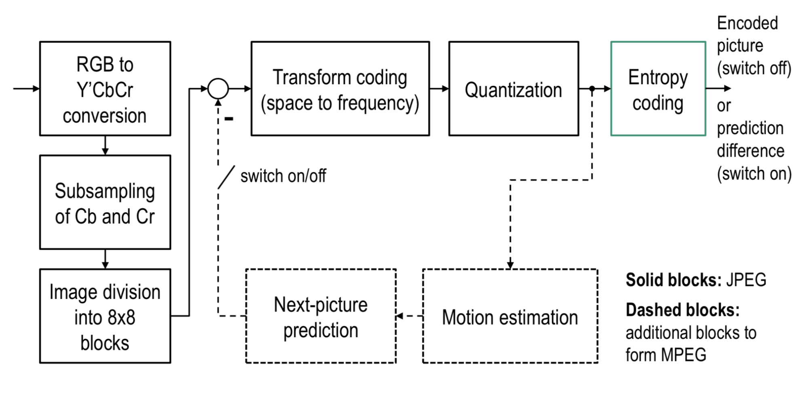
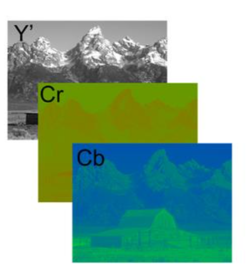
- Separated into Luminance (Y’) and Chrominance (Cb & Cr).
- Removes redundancy, converts to transmission suitable format.
- Y’ stored in high resolution, Cb and Cr are subsampled and compressed.
- Humans are more sensitive to brightness than colour so we don’t need to store as much information on colour to see a high quality image.
Subsampling notation
<pixels in row> : <samples in 1st row> : <samples in 2nd row>
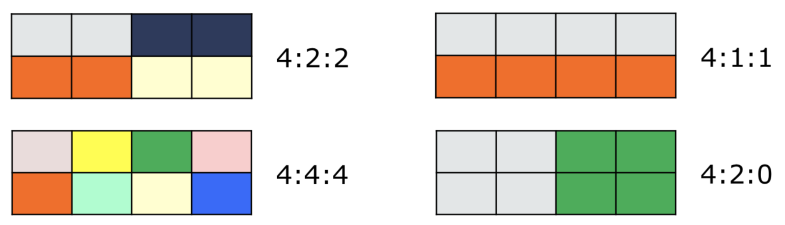
Entropy coding
- Aims to assign short codewords to frequently occurring values
e.g. Run-Length-Coding algorithm.
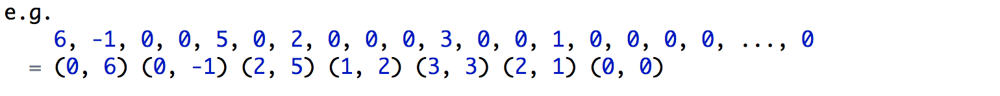
VPRC: Processing Introduction
Image processing
- Subclass of signal processing specifically with pictures and is split into 3 areas:
- Image compression: Decrease redundant image data to store and transmit data in an efficient form (lossy or lossless).
- Image enhancement: Improve human perception of information in images, provide better input for automated image processors and reduce noise revealing features in an image.
- Image understanding: Interpreting regions and objects in image and extracting meaningful information using bottom-up (raw to high level analysis) and top-down approaches.
Digital Image Processing |
Low level process | Mid level process | High level process |
Input: Image Output: Image Example: Noise removal, image sharpening. | Input: Image Output: Attributes Example: Object recog and segmentation (sobel). | Input: Attributes Output: Understanding Example: Scene analysis, autonomous navigation. |
DIP Challenges
- Process huge amounts of data.
- Need swift image and video processing.
- Information is lost when 3D represented in 2D.
- Quality of image affects processing e.g. brightness and noise.
Applications of image processing
- Infrared Imaging: Building diagnostics.
- Gamma-ray Imaging: Bone scans, PET scans and nuclear reactor images.
- X-ray Imaging: Diagnose some cancer patients.

Remote sensing
- Derivation of information about an object which is not directly in contact with observer e.g. creating maps using planes or satellites, weather forecasting and fire monitoring.
VPRC: Image formation
Human eye
- Cornea → curved window through which light enters, this is fixed.
- Iris (Iris) → controls light levels entering.
- Lens (Lens) → unlike the fixed cornea, the lens inside is adjustable.
- Retina (CCD) → converts light energy to neural impulses.

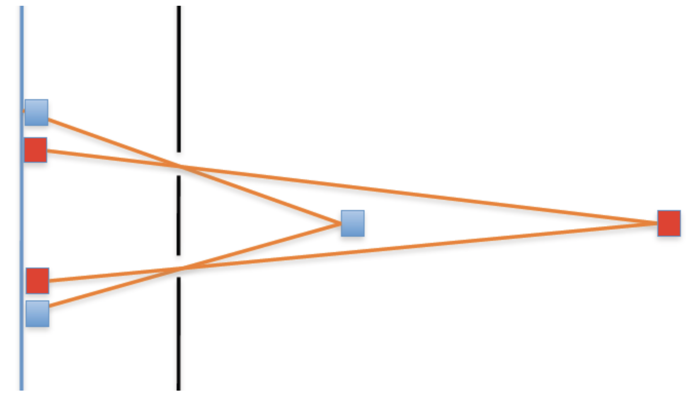
Binocular vision
- Human eyes separated by ~65mm, allows us to combine left view and right view to form a 3D shape e.g. two pinhole design allows us to form 3D image. 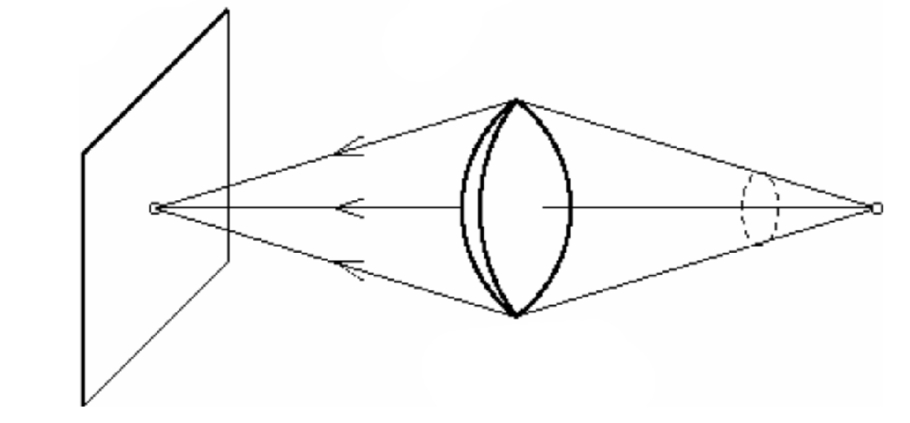
- Can adjust lens to make object smaller / bigger without increasing the pinhole size.
Focal length
- Cameras need lots of light in order to receive a picture, therefore it would be ideal to have a large pinhole size. However, large pinholes also produce blurry pictures.
- For this reason, we use a lens which allow us to capture more light and maintain a sharp image.
- Double convex lens: All parallel rays focused at focal point. Distance from lens to that point is the focal length.
- Double concave lens: Focal length is the distance at which the back-projected rays come together.
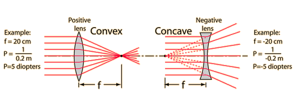
VPRC: Image Histograms
Overview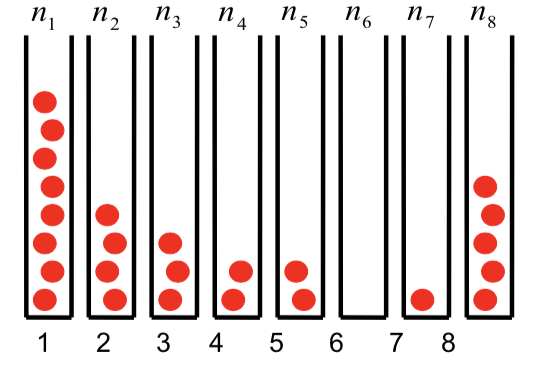
- Height of each bar is number of data points that value is within range of bar (bin).
- We represent histogram values with ‘h’ and colour intensity values with ‘rk’.
e.g. how much is h(r2) in the following graph →
h(r2) = 4, due to 4 ‘h‘ values in r2
Normalised Image Histogram
- Histogram function divided by the total number of pixels of the image.
- Gives measure of how likely it is for pixel to have certain intensity.
- Sum of normalised histogram function over the range of all intensities is 1.
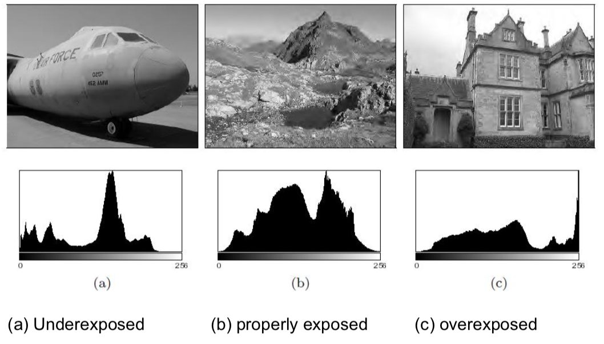
Applications of Histogram in Image Acquisition
- Can use histograms to determine whether an image is under or over exposed by looking at where the majority of the ‘h’ values sit.
- If there are too many values in the black range then the image is underexposed, if too many in white, then the image is overexposed.
- Colour histograms: Use 3 curves, each representing either R, G, or B → produced by discretizing each colour of image into number of bins then count number of pixels.
Contrast and Dynamic Range
- Contrast: Range of intensity values effectively used within a given image, that is the difference between image’s max and min pixel intensity values.
- Full-contrast image: Makes effect use of entire range of available intensity values.
- Dynamic range: Number of distinct pixel intensity values of an image.
Histogram Equalisation
- Rearranges pixel grey levels in order to achieve an equal density distribution (different for every digital image).
- This process can reveal details that would be otherwise invisible e.g. showing a person’s face when it was covered by a shadow.
VPRC: Edges
Image Histogram
- Graphical representation of intensities and tones in an image.
- However, different images can have the same image histograms.
- They are dependent on the colour of the object being studied, thus similar object of different colour may be indistinguishable based solely on colour histogram.
Edge overview
- Significant local change in image intensity, it is the boundary between two regions with distinct colour level properties.
- Geometric → Object boundary (depth) and Surface boundary (orientation).
- Non-geometric → Shadows from object or other objects.
Edge Types |
Step 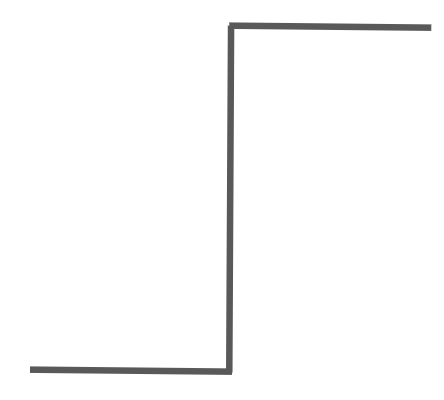 | Intensity abruptly changes from one value on one side of discontinuity to different value on opposite side. |
Ramp 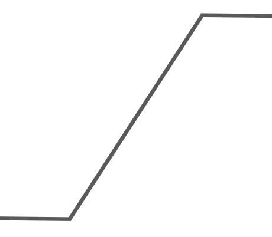 | Intensity change is not instantaneous but occur over finite distance. |
Ridge 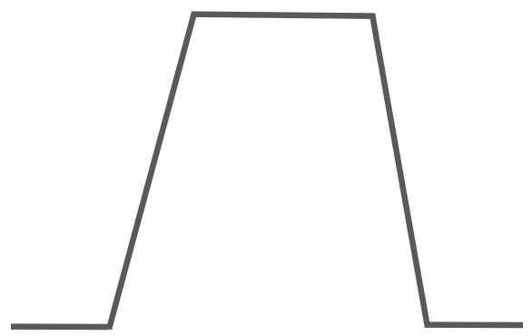 | Intensity abruptly changes value but returns to initial value within short distance. |
Roof 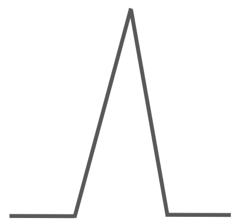 | Intensity change is not instantaneous but occur over finite distance and returns to initial value. |
Edge detection
- Allows us to separate objects from the background (segmentation) which could help us to recognise patterns and carry out motion analysis (object tracking).
- We can also produce a line drawing of an image so that less data is processed.
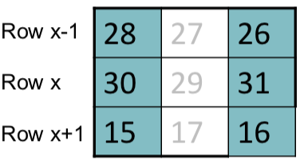
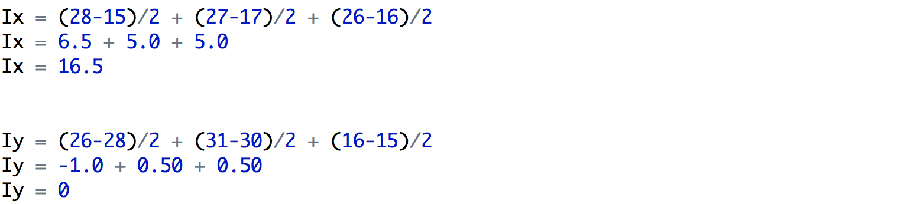
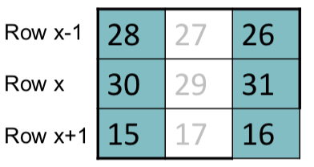
Find magnitude of change and direction
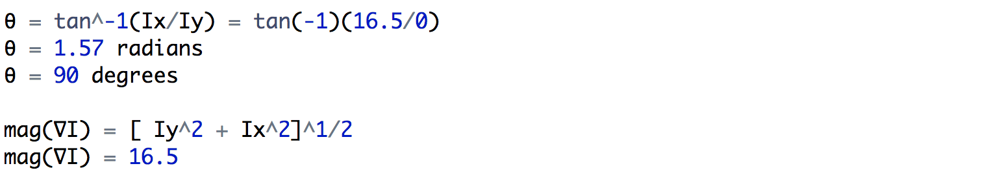
Segmentation
- Dividing image into regions of related content, image segmentation refers to separating objects from their background.
- Reduces unnecessary data while retaining only important data for analysis.
- Image segmentation methods:
- Threshold: Finding regions by grouping pixels of similar grey values. Can determine threshold value using a histogram where all the colours are balanced.
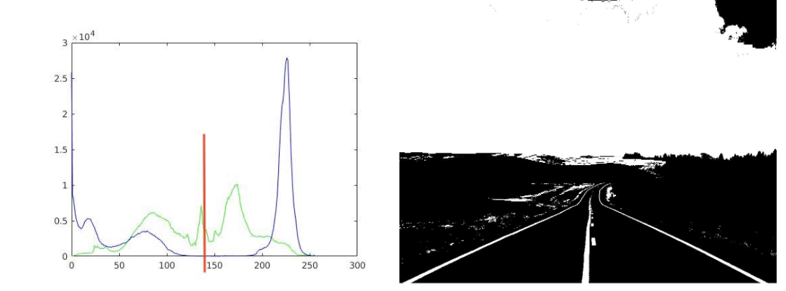
- Edge: Finding boundaries between adjacent regions.
- Region: Finding regions by growing and splitting.
- Motion: Finding regions by comparing successive frames of video sequence to identify regions that correspond to moving objects.
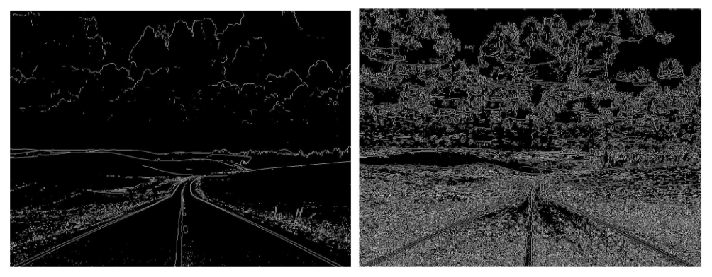
VPRC: Moving Object Detection
Frame difference
- You must separate the static background of a scene (current frame) from the next moving foreground (next frame).
- This allows us to have a low computational load as we’re only looking a difference.
- Objects must be continuously moving for this method to work, largely depends on chosen threshold which may be inaccurate.
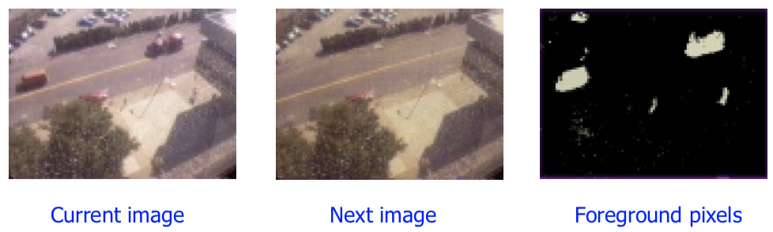
Background subtraction
- Simple frame differencing
- Pixels are labelled as object (1) or not object (0) based on thresholding absolute intensity difference between current frame and background.
- Continues to detect moving objects but may struggle with new objects entering scene.
- Important for detection to split a blob if merged (two objects passing).
- To avoid ghost effect, we should use three-frame differencing where we look at where the object was and where is now to determine location.
- Can use per-pixel, region or frame processing for background subtraction.
- Adaptive background subtraction
- Current image is blended into background model with a parameter a.
- Objects that stop, ghosts left behind objects gradually fade into background.
- Model of the background
- Maintain a model of the static background
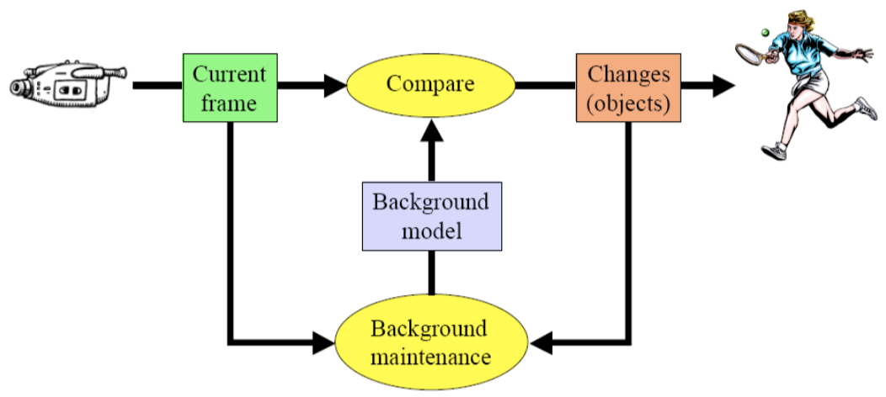
VPRC: Object Tracking in Videos
Overview
- Detection: Position of moving objects, or of the camera, given sequence of frames.
- Tracking: Estimating trajectory of object in image plane as it moves around scene.
- Dynamics: Use image measurements to estimate position of object, also incorporate position predicted by dynamics e.g. expectation of object’s motion pattern.
- Performance: Measure of accuracy between actual and approximate values e.g. if the performance value is low, then we can say we have a high accuracy.
Background Subtraction with Moving Camera
- Motion compensation algorithm that corrects each frame and performs background subtraction in normal fashion.
- Creates motion trajectories for each point, camera motion found from trajectory that most of points agree upon. Creates a background mosaic.
Template matching
- For given region in one frame, find corresponding region in next frame by finding maximum correlation score in a search region.
- Can use other sensors to increase accuracy of object tracking e.g. confirm with proximity sensors.
Features for Object Tracking
- Colour: Easy to implement, ambiguities possible.
- Shape: Active contours (not very easy to implement).
- Motion: Intermittent, but very discriminant when present.
- Texture: Requires computations; used in image processing but less for tracking.
Kinect
- Uses structured light (known pattern) to compute depth map and then infers body position using machine learning by looking at the deformation of the pattern.
- If light comes back sooner and stronger, suggests a difference in depth of object.
SPRC: Basic Model and Sampling
Voice communication
- Takes place with speakers producing speech signals in form of acoustic waves that travel from speaker’s mouth to listener’s ears.
- Speech signal: Sequential arrangement is governed by rules specified in language.
Articulatory Phonetics (production)
- Voiced sounds produced when air from lungs forces vocal cords to oscillate.
- Vocal cords oscillatory action produces series of pulses of air that excite vocal tract.
- Vocal tract resonates at specific frequencies.
- Different sounds are produced by different vocal tract (VT) configurations which result in different VT frequency response patterns which carry speech message information.
Polyperchon
Unvoiced speech characteristics
- Vocal tract is excited by turbulent flow of air through constricted spaces in vocal tract.
- Their frequency domain representation in general and the magnitude spectrum in particular has powerful components at high frequencies.
Modelling
- Binary excitation model: Provides periodic pulse-type signal of appropriate pitch frequency for voiced sounds and a noise signal for unvoiced sounds.
- The model is simple
- Limited quality of synthesized speech compared to mixed excitation models.
- More accurate mixed excitation models produce mixed excitation signals.
Sampling
- Ideal: Impulse at each sampling instant.
- Natural: Pulse of short width with varying amplitude.
- Flattop: Sample and hold, like natural but with single amplitude value.
Nyquist Theorem
- Waveform should be sampled at rate which is at least twice its highest significant frequency component if it is to be recoverable from the samples.
SPRC: Speech Coding
Overview
- Speech coding: Techniques applied prior to transmission or storage of voice signals in order to transform to digital and compress the signal.
- Goal is to digitise the input signal with least amount of bits per second while certain quality is maintained.
- Speech encoding algorithms seek to remove redundant information from signal.
Applications
- Satellite Comms: Expensive channel to rent, thus loading channel with more voice signals you are making more money.
- Mobile radio Comms: Same concept as above.
- Voice store and forward systems: Loading the same data with a lower bandwidth means you can pay less for a slower connection to receive the same data.
Requirements
- Minimum output bit rate → use a trade-off to receive the desired quality with the lowest possible bit-rate. The lower the bit rate the smaller the cost.
- Variable/Fixed output bitrate → if signal is fixed then you don’t need buffers, e.g. in a variable signal there may be silences and different levels. Without buffer you can do lower bit rate but hardware is more expensive.
- Time delay → each component of the process takes time, end to end delay (latency). Must keep processing at minimum as you need information immediately, ideally.
- Robustness of operation: Minimising level of destruction e.g. part of information is lost along the way to connection, user experiences quality loss, but not disconnection
Grades of Audio Signal quality
- CD audio → signal BW 20KHz
- FM radio → 20 to 15,000Hz
- AM radio / Broadcast → 50Hz - 7KHz
- Telephone / Toll / Network → 200 to 3,400Hz
General Vocoder
- Captures characteristic elements of an audio signal and attempts to synthesize the audio signal.
- Technology aims to reduce bandwidth of voice information and thus allows to take low bit rates (usually 2.4Kb/sec)
.
Speech coding systems
- Waveform Coders → High bit rates to 16Kb per second.
- Vocoders → Low bit rates, usually 2.4Kb per second.
- Hybrid Systems → Low bit rates, 8 to 1.2Kb per second.
SPRC: Speech Recognition
Speech recognition (SR): Vision
- Used in Human-Machine-Interface (HMI) where natural speech communication with intelligent machines is established.
- Must be able to recognise continuous speech from multiple speakers with diverse speaking styles and vocabularies → must adapt.
Dimensions of difficulty |
Isolated Word | Systems trained with discrete interpretations of speech such as numbers, letters, words at a time e.g. customer service telephone bots. |
Continuous Speech | Allow user to provide message in unconstrained way, cannot have all possible inputs but should be able to identify patterns. |
Speaker Dependant | Uses single speaker to learn parameters or models that characterise system’s internal model of speech process, thus more accurate. |
Speaker Independent | Trained by multiple speakers and used to recognise speakers outside training population. |
Vocabulary Size | Words are stored in a list that system has to scan, process becomes impractical as vocab size increases. |
Endpoint Detection | If silence then there is no energy (or little energy) thus amplitude is less than voice, detect silence if signal is less than a threshold. However, if noise is same amplitude as signal we must use other techniques e.g. - Noise varies slower than signal, thus during silent period we have smaller number of variations.
- Zero-crossing: Count number of times signal passes zero and changes sign. Thus, if above threshold, can estimate that a signal is transmitted.
|
COM: Transmission of Information
Overview
- Composed of sequence of symbols, letters, signs or signals.
- Shannon information content - Probability of a symbol appearing:
- Less occurring characters carry less information e.g. ‘e’, ‘t’ etc..
Altering information messages
- Encode - adds redundant information to original message to increase reliability.
- Compress - removes redundant information from original message to reduce size.
- Encrypt - reorders or substitutes characters to decrease likelihood of interpretation.
Transmitter (receiver is opposite) |
Analogue-to-Digital Converter (ADC) | Sampling, quantisation and pulse-code modulation. |
Source coding | Compression. |
Encryption | Employment of cipher. |
Channel coding | Add redundant bits for error control, detection and correction. |
Multiplexing | Combine data with control information to establish and terminate connection. |
Line coding | Convert incoming bit stream into sequence of pulse that yield better spectrum characteristics. |
Pulse shaping | Reduce occupied bandwidth of the input. |
Modulation | Convert incoming symbols to waveforms. |
Frequency/Spectrum spreading | Process input signal to be less vulnerable to interference. |
Channel Coding: Block Codes
- Source data is grouped into blocks of k bits each, known as information words.
- Encoded into codewords of n bits each.
- Improves reliability of data as some errors can be corrected, the data rate reduces as the parity check bits take up the space of the data bits e.g. if sending 10 bits, when introducing channel coding we add 5 parity checks, thus only space for 5 data bits.
- Code rate = input information bits / output coded bits = k / n.
Modulation
- Modification of signals characteristics in sympathy with another signal.
- Modified signal is the carrier, signal doing the modifying is called information signal.
- Goal to transform baseband signal to band pass signals, why?
- Signals can be matched to channel characteristics.
- Signals can be combined using frequency division multiplexing (FDM) and transmitted across common medium.
- Efficiency antennas of reasonable size can be construction for radio comms.
Binary modulation
High-order modulation
- Can use four voltage levels (4-ASK) to uniquely encode two binary symbols.
- Allows us to send twice as fast for given bandwidth, or use half the bandwidth.
- Reduced immunity to noise when compared to binary signalling, becomes more difficult to distinguish between symbol states, also more complex to recover.
Bit error probability
- Performance of transmission scheme - SNR to noise power spectral density (Eb/N0).
- SNR signifies how many times received signal power is stronger than at receiver (dB)
COM: Cryptography
Overview
- Steganography → Hiding existence message from sight, e.g. shave head.
- Cryptography → Hiding meaning of message through encryption, protocol agreed between sender and receiver.
- Transposition: Letters of messaged are rearranged generating anagrams.
- Substitution: Characters (cipher) or words (code) are subbed by different characters or symbols.
Crypto (graphy vs analysis)
- Graphy is the science of designing cipher systems, known as code-makers.
- Analysis is the process of deducing information about plaintext from ciphertext without knowledge of key, known as code-breakers.
- Worst case scenarios:
- Code-breaker has knowledge of the encryption algorithm.
- Code-breaker has obtained considerable amount of ciphertext.
- Code-breaker knows the plaintext equivalent of a certain amount of ciphertext.
Cipher system
Caesar Cipher
Vigenère Cipher
Frequency analysis
Keys
- Symmetric → Decryption key is identical to the encryption key.
- Asymmetric → Decryption key and encryption key are different from each other. Doesn’t require users to share common secrets, no need for trust at all e.g. RSA.
COM: Satellite Navigation
Global Positioning System (GPS)
- Space Segment
- There are 4 satellites in each of the 6 orbits, creates a constellation of satellites. Always have 1 extra for redundancy.
- Geometry ensures that 4 to 10 satellites are always visible from almost every place.
- Not all satellites have same hardware, but all must send the same signal.
- Life expectancy of satellite is around 10 years, damaged from debris etc.
- Control Segment
- Involves satellite monitoring stations where the master control station ensures health and accuracy of accuracy constellation.
- Makes decisions for the satellites, sends commands if corrections required.
- Ground antennas used to communicate with GPS satellites for command and control purposes.
- User Segment
- Satellites circle earth twice a day and transmit signal information to Earth.
- GPS’ use this signal and use trilateration to calculate location - need at least 3 satellites for 2D → → →
- 3D - need 4 satellites, when 2 spheres join together, that gives us the exact location on the surface of Earth.
Accuracy
- Civilian GPS (unaided) systems are accurate up to 15m, usually less accurate in busy areas such as cities as the signal can be reflected off buildings etc.
- Assisted GPS rely on reference stations that collect data and send to master stations, this improved accuracy to less than 3m.
Sources of signal errors
- Ionosphere and troposphere delays → signal slows down as it passes through atmospheric layers, travels in a zig-zag, but calculation assumes a straight path as receiver doesn’t have knowledge of those layers (1-10m errors).
- Signal multipath → Signal reflected off object such as tall buildings and mountains. Satellites not very affected as the distance from the receiver is large, mobile communications more affected as transmitter is closer (0.5m error).
- Orbital errors → satellites can move out of their location, time it takes to activate thrusters to put back in place, satellite will report wrong locations (1m error).
- Number of satellites visible → Buildings, terrain, electronics can block signal reception thus reducing number of satellites that are received.
- Receiver clock errors → Built-in clock in receivers (commercial devices need to be affordable) not as accurate as atomic clocks on satellite, thus small timing errors may occur. Can solve the timing error by adding another satellite solving for another unknown (1m error).
- Satellite geometry/shading → In some cases some satellites may be blocked and thus may result in having a tight group of satellites or in a line grouping.
- Intentional degradation → Satellites signal receipt can be sabotaged.
COM: Satellite Communication
Long-distance communication
- Eye-level horizon is typically 4.5km, increases to 11km at 10m and 357km at 10km.
- Line-of-sight communication method limited by this effect, introduced telegraph.
- Using high-frequency radio waves, signals could be bent over horizon by refractive effect of the ionosphere.
Kepler’s Laws for orbits
- The orbit of a satellite is an ellipse, with the Earth at one focus.
- The line joining the satellite to the Earth sweeps out equal areas in equal times.
- The square of the orbital period (time to complete one orbit) is proportional to the cube of its average distance from the Earth.
Geosynchronous Orbit
- Typical distance is 36km from surface, satellite needs to travel 3km/s (11,000 km/h) in order to stay in orbit at that distance, thus takes 24 hours to orbit.
- When orbital period of satellite == Earth’s rotational time, orbit is geosynchronous.
- Satellites travel in an elliptical route, slows down to increase signal duration in an area and speeds up to return to the signal position.
Geostationary satellites
- Satellite remains in fixed position relative to a point of the surface of Earth.
- Occupy prime orbits for communication satellites, busy bit. They use thrusters to maintain their position where some fuel left at end of lifetime to clear it.
- Pros: No need to track satellite with steerable antenna, only 3 satellites required to cover surface of Earth.
- Cons: Signals are weaks, satellites can’t be seen from latitudes higher than 77°.
Position coordinates
- In order to use a satellite, its position must be known:
- Latitude is the angle north/south from the equator.
- Longitude is the angle east/west from the prime meridian (Greenwich).
Pointing direction of Earth Station Antenna
- Knowing satellite position in space, antenna pointing direction can be computed.
- Elevation: Angle above local horizon where 90° is vertical.
- Azimuth: Angle measurement clockwise from North.
- Satellite TV: Direct Broadcast Satellite (DBS) service → distributes directly.
Segments of satellite TV systems
- Ground segment
- Acts as hub for satellite communication services, uplinks data and is operated by third-party companies.
- Shape of transmitter and receiver not always perfect, loses and interference.
- Gain is a measure of ability to focus signal for transmission receiving.
- Space segment
- Satellite system itself e.g. Eurobird 1.
- User segment
- Uses small antennas that receive only, the dish is often made of mesh where the holes are smaller than the wavelength of radio signals.
Iridium Satellite Constellation | Inmarsat Satellite Network |
- Global coverage
- Low Earth Orbit
- Low Power
- Small signal delay
- 66 (+7) satellites
- Complex and Expensive
| - Large coverage (no poles)
- Geostationary Earth Orbit
- High Power
- Long signal delay
- Only 4 satellites
- Simpler and cheaper
|